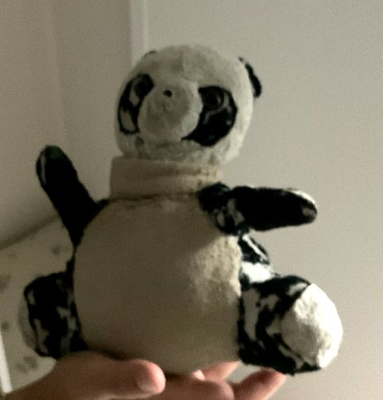
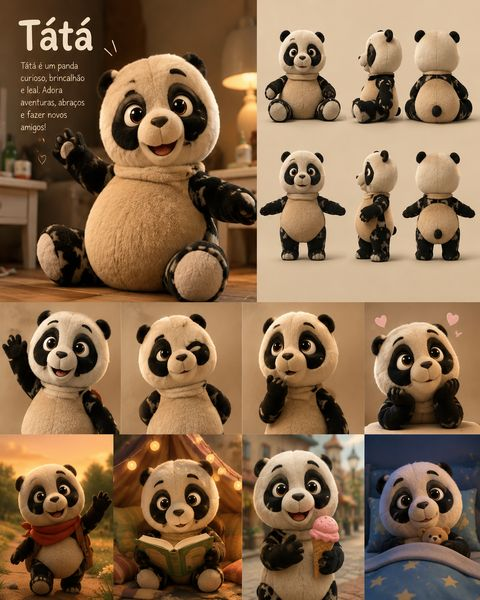

A descoberta2 versões
Junto ao ribeiro, a Luna e o Tatá veem a estrela pousada no musgo.
Ao cair da noite, o Tatá e a Luna encontram uma estrela junto ao ribeiro.
Junto ao ribeiro, a Luna e o Tatá veem a estrela pousada no musgo.
O Tatá estende um ramo para a estrela; a Luna observa ao lado.
O Tatá atravessa o ribeiro por cima de um tronco caído.
O Tatá apanha a estrela do musgo e sobe a colina.
No alto da colina, a estrela pousa no focinho do Tatá e a Luna junta-se a ele.
Os cinco momentos seguidos, da descoberta à colina.
O Tatá acena e a Luna chega para se sentar ao lado dele.
O Tatá olha para nós e acena.
Entre árvores e raios de luz, o Tatá e a Luna encontram uma luz no chão.
Sentado, o Tatá acena com a pata esquerda.
A Luna, de cachecol azul.
A Luna encosta-se ao Tatá, de olhos fechados.

O peluche artesanal do Tatá, na palma da mão.

Poses de frente, de lado e de costas, expressões e pequenas cenas.
O lema e o Tatá a acenar.
As mesmas manchas creme nas patas pretas, a mesma dobra ao pescoço.
Tatá